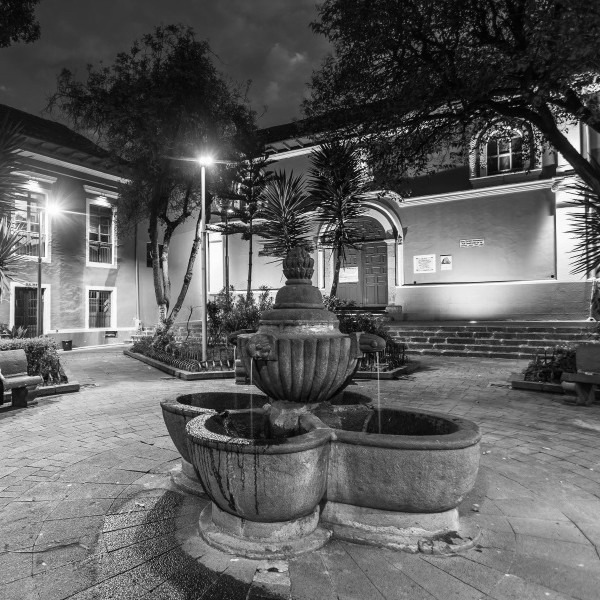
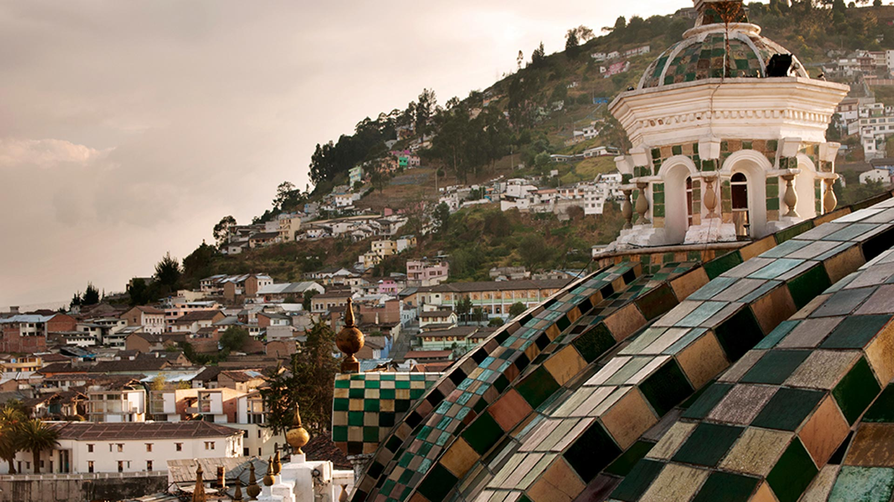

Nuestra marca busca experimentar e innovar constantemente, para llegar a un usuario actual que merece ser percibido con un valor de exclusividad y esencia que lo haga único. Cada pieza de Freepass EC es una obra de arte que combina la tradición y la modernidad, creando una experiencia única para nuestros usuarios.
Fuente del barrio San Marcos.
Fotografía cotidiana.
Gerente Free Pass.
Diseñadora de modas.

Capilla de iglesia Quito.